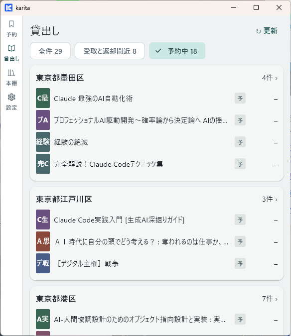
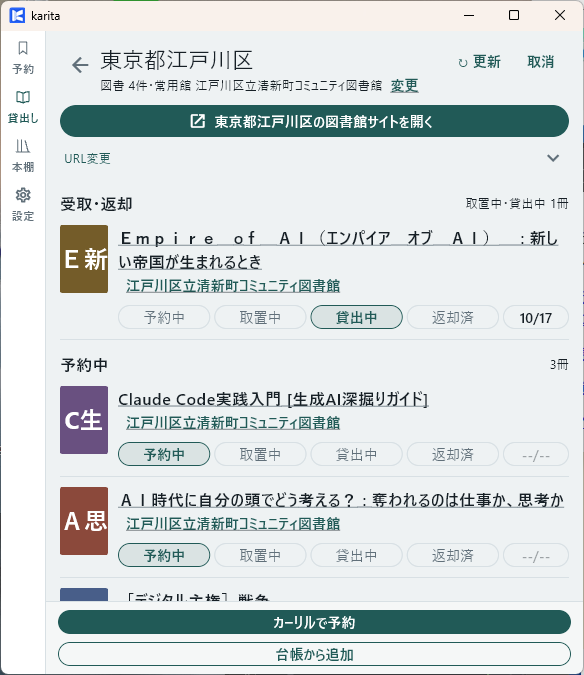

貸出しの棚卸をする
図書館サイトと照合して、受取・貸出し・返却の記録を更新します。
ドラフト
Windows の画面例です。Android の戻り方は実機確認後に補足します。
① karita
貸出しから図書館を選ぶ
↓ ［図書館サイトを開く］
貸出しから図書館を選ぶ
② ブラウザー：図書館サイト
予約状況・貸出中の本・期限を確認
↓ karita に戻る
予約状況・貸出中の本・期限を確認
③ karita
確認した状態と期限を手動で更新
戻るだけでは自動更新されません。
確認した状態と期限を手動で更新
戻るだけでは自動更新されません。
karita に戻った後、手動で更新してください
「karita に送る」やタスクスイッチで戻っても、図書館サイトの状況は自動で反映されません。本ごとに状態・期限を確認し、karita の記録を手動で更新する必要があります。
1. 確認する図書館を開く
【karita】 「貸出し」を開き、各図書館の貸し出し一覧を表示します。 以下で絞り込み検索が可能です。
| 確認したいこと | 絞り込み |
|---|---|
| 予約した本の状況 | 予約中 |
| 取り置き・返却期限が近い本 | 受取と返却間近 |
| 図書館の記録をまとめて照合 | 全件 |
確認する図書館を選びます。

2. 実際の状況を確認する
【karita → ブラウザー：図書館サイト】 ［図書館サイトを開く］を押し、ログインして予約状況・貸出中の本・返却期限を確認します。
図書館サイトの［更新］や［延長］などの手続きが必要なら、そこで完了させます。
3. karita の記録を更新する
【ブラウザー → karita】 次のいずれかの方法で、karita の貸出し画面に戻ります。
- 「karita に送る」を使う：ブラウザーのツールバーで「karita に送る」を開き、［貸出し画面（図書館別）に移動］を選びます。表示されない場合は、タスクスイッチで切り替えます。
- タスクスイッチで切り替える：Windows の Alt＋Tab で karita を選び、確認していた図書館の貸出し画面に戻ります。
切り替えただけでは、図書館サイトの状況は karita に反映されません。確認した内容を次の操作で記録します。

【karita】 本ごとに、確認した状態を選びます。
| 図書館で確認したこと | karita に記録する状態 |
|---|---|
| 予約待ち | 予約中 |
| 受取待ち | 取置中 |
| 受け取って借りている | 貸出中。返却期限も確認 |
| 返した | 返却済み |
対象の本・状態・期限が図書館サイトと一致すれば完了です。ほかの図書館も同じ順で確認します。